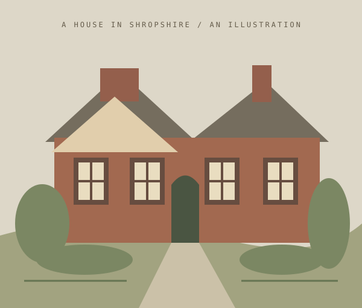

Morning.
Breakfast when you wake up. A cup of tea, the paper, and time to get ready in your own way.
Thirty two rooms in a Victorian house outside Shrewsbury. A place to ask questions, take your time, and talk about what care could look like for your family.
A slower morning. Lunch with company.
A quiet spot when you need one.
Breakfast when you wake up. A cup of tea, the paper, and time to get ready in your own way.
Lunch in the dining room or a quieter meal in your room. A little time in the garden, weather permitting.
Supper and a familiar programme. Space for visitors, conversation, or simply a good book.
Suitability and support are discussed individually with you and your family.
Day to day support with washing, dressing and medication, shaped around an individual care plan.
Familiar routines and a supportive environment. Speak with the team about specific needs and staffing.
A short stay while a family carer rests or travels. Length and availability are agreed in advance.
Care planning alongside appropriate community healthcare professionals, according to assessed needs.
14 sq m · Bed, wardrobe, basin, call point
£1,15018 sq m · Armchair and garden outlook
£1,29018 sq m · Private wet room
£1,38022 sq m · Ground floor, doors to the lawn
£1,4504 room types shown
Illustrative fees from the brief, not an offer or availability statement. Hairdressing and chiropody are extra. Discuss an individual written fee assessment and what you can bring.
Ask about rooms ↗When you visit, ask to meet the people involved in everyday life.
Home manager
Talk through care needs, fees and what happens next.
Senior carer
Ask about routines, continuity and individual support.
Cook
Discuss food preferences, mealtimes and dietary needs.
Illustrative people from the fictional brief. Initial studies are original artwork, not staff photographs.
Bring your questions. Take a look at the rooms. Sit down for a cup of tea.
The brief describes flexible visiting, including evenings, with children and dogs welcome. Please call to confirm current arrangements and accessibility needs.
01743 555 0119 ↗Personal items can help a room feel familiar. Discuss dimensions, space and safety with the team first.
Ask how the team plans continuity and covers leave. Staffing arrangements should be discussed directly.
Ask for written fees and funding terms. The team can discuss a review and appropriate local authority contacts.
This is a fictional concept with no verified CQC rating. Check the real provider and its current report on the official CQC website.
Visit CQC ↗Red brick, a garden path and a window to sit beside. An original illustration inspired by the brief.

Contact links open your own phone or email app. No details are collected here.